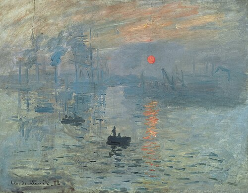

Oscar-Claude Monet was born in November 1840 in Paris, France. Despite his father wanting
him to be a part of the family grocery store business, Monet aspired to be an artist at a
young age. He attended Le Havre secondary school of the arts at the age of 10. 6 years later, his
mom died and he moved in with his aunt.
When Monet was 21, he joined the First Regiment of African Light Cavalry in Algeria. His aunt
pressured him to end his service and complete an art course at a university. There, he became a
student of Charles Gleyre and met many other famous artists. They include Pierre-Auguste Renoir,
Alfred Sisley, and Frédéric Bazille. All of the aspiring artists shared a new approach for art.
The Franco-Prussian war broke out which impacted the lives of many artists such as Monet. He and his wife
at the time ended up taking refuge in England, where he studied the works of others. However, his most
popular paintings were created around the time of when his wife died in 1879.
Around 13 years later, he married Alicia Hoschede. Their family moved to Giverny, France where Monet felt very
inspired. Paintings such as the Water Lilies, the Houses of Parliament, Mornings on the Seine, and more. In 1923,
cataracts started to form on Monet’s eyes. This impacted the hues and colors of the paintings. Monet ended
up passing away on December 5th 1926 due to lung cancer.
